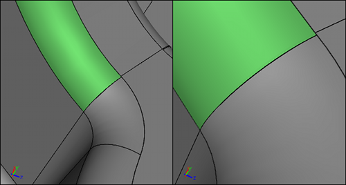
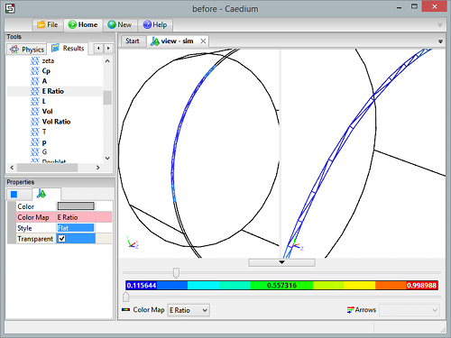
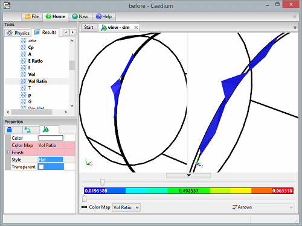
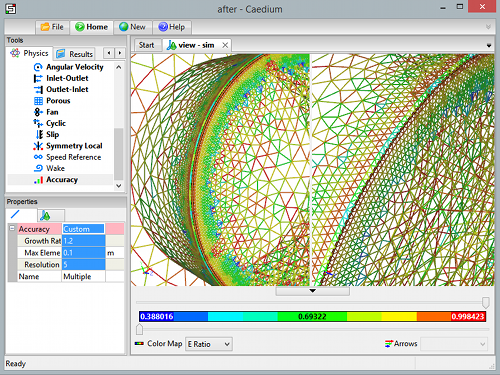
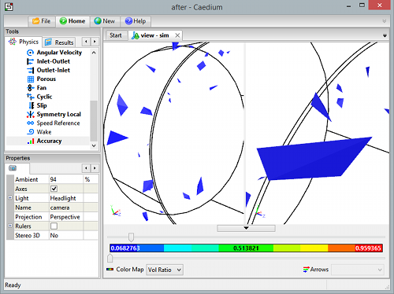

How do I fix mesh and solver failures?
This FAQ assumes you are having problems with a RANS Flow simulation.
First check the basics:
- Did you create a single flow volume representing the fluid region in or around your object? For an external flow you will need to subtract your object from a larger outer boundary, such as a box. The solid, in CAD terminology, has to represent the fluid that surrounds your object.
- Did you add a Substance to your flow volume?
- Did you create a boundary condition on each flow volume face?
- If you stopped (Home->Stop) the simulation, did you reset (Home->Reset) the simulation?
90% of all simulation failures relate to mesh problems, even when Caedium reports a solver failure. So before you make any solver changes check your mesh as outlined below.
Meshing Problems
Pre-Mesh
Before creating a mesh try shading all model faces. Warning and errors will be reported in the File->Log, such as:
- Visual representation (facetting) failed
Such warnings are an indication that your geometry may be invalid. Try using the Other->Fix tool in the Geometry Tool Palette to fix your volume.
Face Mesh Quality
Next investigate the face meshes. To view the face meshes follow the tutorial "View a Mesh." As well as Scalar Field->A (area), also look at Scalar Field->E Ratio (edge ratio) in the Results Tool Palette as a measure of element quality where 1 = ideal, 0 = bad. Keep an eye on the log report for warnings, such as:
- Triangulator: Failed: Front progress failed: 25 edges remain
- Tetulator: Failed: Face already in front
Use the threshold sliders on the view window legend to examine poor quality elements (and small elements - switch the current color map using the drop down Color Map list on the legend) - look for sliver faces or edges. To remove sliver faces and edges use the Face->Join and Edge->Join tools in the Geometry Tool Palette to join the small entities with larger neighbors.
Sliver Face (Red) on a Model
Sliver After Joining with Larger Neighbor (Green)
Next use the thresholding to look at the large elements and see if there are likely to be any size mismatches - if there are - try using the Accuracy tool in the Physics Tool Palette to explicitly specify the element size either on edges or faces nearby.
Poor Face Mesh ElementsIdentified using E-Ratio and the threshold sliders
Volume Mesh Quality
If all is well then move on to the volume mesh. Even if the volume meshing fails there will likely be some volume elements to examine. To view the volume mesh follow the same procedure as for viewing the face meshes, except use the Scalar Fields->Vol Ratio in the Results Tool Palette, and set the volume view properties: Style = Flat and Transparent = Off. Also make sure your faces are transparent, otherwise you won't see the interior volume.
An ideal element will have a Vol Ratio = 1, and so focus on the low valued elements with the threshold sliders to see if there is a particular region causing problems. If you identify problems try using the Accuracy tool to locally modify the mesh size on nearby edges/faces.
Poor Volume Mesh ElementsClustered around poor face mesh elements.
Identified using Vol-Ratio and the threshold sliders.
Improved Face Mesh ElementsAfter Accuracy tool applied to faces with poor elements
Improved Volume Mesh ElementsNo clusters after Accuracy tool applied to faces with poor elements
Mesh Resolution Using the Accuracy Tool
Also use the Accuracy tool to ensure you have adequate mesh resolution of your important geometry features and flow regions ready for your flow simulation.
Solver Problems
Most problems that relate to solver failures are often mesh problems.
Mesh Corrupt
If the solver reports:
FOAM FATAL ERROR:
Illegal cell label -1 in neighbour addressing for face ...
it is a sign that the volume meshing failed prior to launching the solver process. To fix the geometry and/or mesh problem review the diagnostics mentioned in the previous sections. Changing Substance properties or boundary conditions will not fix the mesh, only changing the geometry or adding the Accuracy tool to your geometry will fix this error.
Physics Mismatches
Assuming you are satisfied your mesh is ok, then other likely causes of problems could be:
- Substance->Properties->Reference values - do they reflect your case (e.g., U, Omega:Turbulent Length Scale)?
- Initial Values - do you have initial values close to the main bulk of the flow? It maybe the Reference option for U isn't a good choice, so try specifying a Fixed Value
- Boundary Conditions - are all your walls covered with Wall conditions? The most robust combination of inlet and outlet are the defaults, but are you sure the outlet is far enough away from flow gradients?
Turbulence Model Selection
Another option is to try changing the turbulence model. Try one of the more robust turbulence models, such as Substance->Solver:RANS Flow->Turbulence Model = K-Omega SST.
Simulation Runs buts Fails Later
To identify a region having problems, run the simulation and make sure a results extraction takes place. E.g., if the simulation fails at 90 iterations according to the Residual Monitor, set the Substance->Solver->Iterations = 80, and then apply the Vector Fields->U on all faces as a Color Map. Run the simulation again, this time you will have extracted results just before it failed. The velocity magnitude is likely to be unrealistically large somewhere, use the sliders (thresholders) in the View Legend above and below the Color Bar to identify the large values. In general anywhere there is a small gap can be a problem - aim to have regular shaped cells to bridge the gap - not squashed (flat) cells. Apply the Accuracy tool with an appropriate setting to either the edges or faces close to the region causing the simulation to fail.
Relaxation Factor Modifications
As a last resort for steady state simulations you can try modifying the solver relaxation factors, for more details see "Relaxation Factors in RANS Flow Solvers".
Rollback
If your simulation fails and you want to try a minor setup change (e.g., modify your Relaxation Factors) then make sure Substance->Solver->Rollback Levels is set to 2 (default) or more. This allows you to roll back the simulation after a failure. To perform the rollback click the Previous button in the Home Toolbar. You can always rollback to the most current results on failure independent of the Rollback Levels property setting, beyond that you can rollback upto the number you set in the Rollback Levels property.
Your aim is to rollback to a good state where the results do not reflect the current failure.
After rollback you can try just running the simulation again, sometimes the act of rollback helps (rounding error nudge is enough) to get over the failure. More often you should try modifying your Substance->Solver->Relaxation Factors, then keep repeating this procedure until the simulation succeeds.
Feedback
Questions? Ideas? Problems?